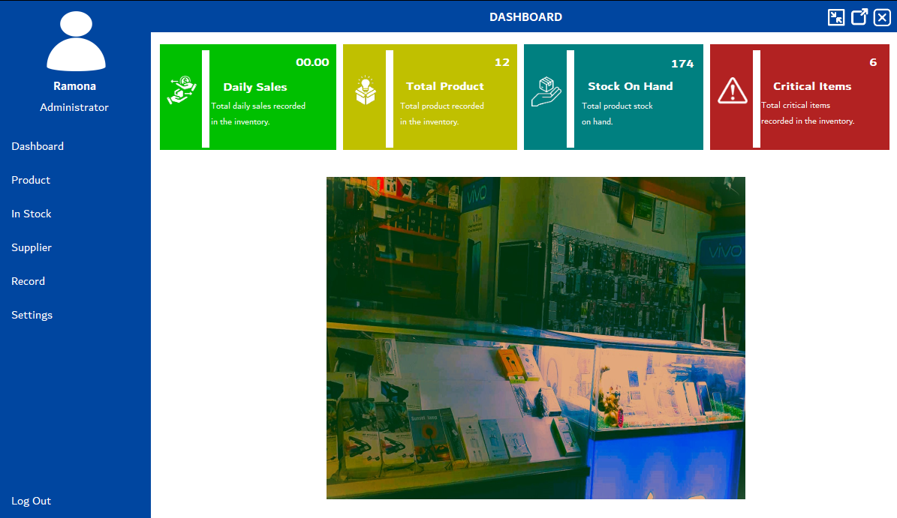

Computerized Sales and Inventory System
This project is a customized software solution developed to streamline the sales and inventory processes of Mark Limuel Piliin Mobile Shop. The system replaces the existing manual operations with an efficient and automated solution, significantly reducing errors, saving time, and enhancing decision-making through real-time data access.
Key features include:
- Automated inventory tracking and sales monitoring.
- Real-time updates on stock levels to prevent overstocking or shortages.
- Easy-to-use interface for managing products, sales records, and supplier details.
- Reporting tools to generate sales and inventory insights for informed business decisions.
Developed using C# and SQL Server, the system adheres to modern software development practices, ensuring reliability, security, and scalability for the growing business. This project demonstrates my skills in system design, database management, and software development.
Sales and Inventory System Dashboard
E-Salabat: An IoT-Powered Machine for Powderization of Ginger Extract
This project is an innovative solution designed to automate the production of ginger powder, addressing the labor-intensive and time-consuming processes of traditional methods. Equipped with IoT technology, the E-SALABAT machine integrates juicing, cooking, and powderizing into a seamless workflow.
Key features include:
- Real-time monitoring and control of temperature, humidity, and grinding speed via a mobile application.
- Automated scheduling, maintenance notifications, and data collection for efficiency and quality assurance.
- Adherence to ISO/IEC 25010 standards and compliance with FDA regulations for high-quality production.
Developed for implementation in the local ginger production industry, this project promotes sustainability, increased productivity, and improved product quality while contributing to economic growth and environmental conservation.
E-Salabat Prototype
Pitching Competition Under Renewable Energy Category Champion: EX-Salt
EX-SALT is an innovative solution addressing the challenges in the Philippine salt industry, including aging labor, climate change, and competition from imported salt. This IoT-enabled salt processing machine automates harvesting, processing, and packaging tasks, ensuring efficiency and consistent product quality while reducing labor needs.
Key Features:
- Process Automation: Streamlines salt production processes.
- Quality Assurance: Monitors temperature, salinity, and other parameters for optimal output.
- Environmental Sustainability: Powered by renewable energy to promote eco-friendly practices.
- Scalability: Designed to grow with the needs of small-scale and large-scale salt producers.
- Mobile Application: Provides real-time data analytics and system control.
This project is a step toward revitalizing the local salt industry, empowering producers, and promoting sustainability through cutting-edge technology.